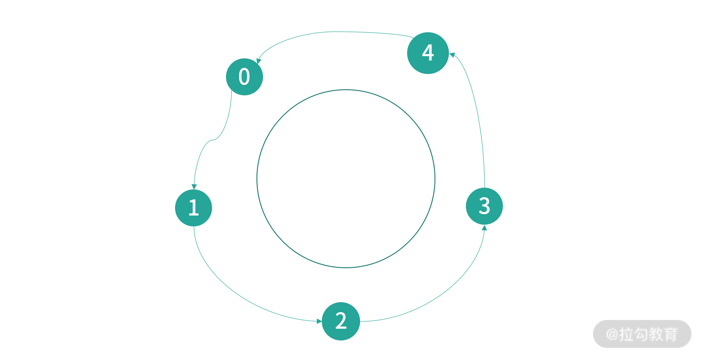

- 00 开篇词 为什么大厂面试必考操作系统？.md.html
- 00 课前必读 构建知识体系，可以这样做！.md.html
- 01 计算机是什么：“如何把程序写好”这个问题是可计算的吗？.md.html
- 02 程序的执行：相比 32 位，64 位的优势是什么？（上）.md.html
- 03 程序的执行：相比 32 位，64 位的优势是什么？（下）.md.html
- 04 构造复杂的程序：将一个递归函数转成非递归函数的通用方法.md.html
- 05 存储器分级：L1 Cache 比内存和 SSD 快多少倍？.md.html
- 05 (1) 加餐 练习题详解（一）.md.html
- 06 目录结构和文件管理指令：rm -rf 指令的作用是？.md.html
- 07 进程、重定向和管道指令：xargs 指令的作用是？.md.html
- 08 用户和权限管理指令： 请简述 Linux 权限划分的原则？.md.html
- 09 Linux 中的网络指令：如何查看一个域名有哪些 NS 记录？.md.html
- 10 软件的安装： 编译安装和包管理器安装有什么优势和劣势？.md.html
- 11 高级技巧之日志分析：利用 Linux 指令分析 Web 日志.md.html
- 12 高级技巧之集群部署：利用 Linux 指令同时在多台机器部署程序.md.html
- 12 (1)加餐 练习题详解（二）.md.html
- 13 操作系统内核：Linux 内核和 Windows 内核有什么区别？.md.html
- 14 用户态和内核态：用户态线程和内核态线程有什么区别？.md.html
- 15 中断和中断向量：Javajs 等语言为什么可以捕获到键盘输入？.md.html
- 16 WinMacUnixLinux 的区别和联系：为什么 Debian 漏洞排名第一还这么多人用？.md.html
- 16 (1)加餐 练习题详解（三）.md.html
- 17 进程和线程：进程的开销比线程大在了哪里？.md.html
- 18 锁、信号量和分布式锁：如何控制同一时间只有 2 个线程运行？.md.html
- 19 乐观锁、区块链：除了上锁还有哪些并发控制方法？.md.html
- 20 线程的调度：线程调度都有哪些方法？.md.html
- 21 哲学家就餐问题：什么情况下会触发饥饿和死锁？.md.html
- 22 进程间通信： 进程间通信都有哪些方法？.md.html
- 23 分析服务的特性：我的服务应该开多少个进程、多少个线程？.md.html
- 23 (1)加餐 练习题详解（四）.md.html
- 24 虚拟内存 ：一个程序最多能使用多少内存？.md.html
- 25 内存管理单元： 什么情况下使用大内存分页？.md.html
- 26 缓存置换算法： LRU 用什么数据结构实现更合理？.md.html
- 27 内存回收上篇：如何解决内存的循环引用问题？.md.html
- 28 内存回收下篇：三色标记-清除算法是怎么回事？.md.html
- 28 (1)加餐 练习题详解（五）.md.html
- 29 Linux 下的各个目录有什么作用？.md.html
- 30 文件系统的底层实现：FAT、NTFS 和 Ext3 有什么区别？.md.html
- 31 数据库文件系统实例：MySQL 中 B 树和 B+ 树有什么区别？.md.html
- 32 HDFS 介绍：分布式文件系统是怎么回事？.md.html
- 32 (1)加餐 练习题详解（六）.md.html
- 33 互联网协议群（TCPIP）：多路复用是怎么回事？.md.html
- 34 UDP 协议：UDP 和 TCP 相比快在哪里？.md.html
- 35 Linux 的 IO 模式：selectpollepoll 有什么区别？.md.html
- 36 公私钥体系和网络安全：什么是中间人攻击？.md.html
- 36 (1)加餐 练习题详解（七）.md.html
- 37 虚拟化技术介绍：VMware 和 Docker 的区别？.md.html
- 38 容器编排技术：如何利用 K8s 和 Docker Swarm 管理微服务？.md.html
- 39 Linux 架构优秀在哪里.md.html
- 40 商业操作系统：电商操作系统是不是一个噱头？.md.html
- 40 (1)加餐 练习题详解（八）.md.html
- 41 结束语 论程序员的发展——信仰、选择和博弈.md.html
21 哲学家就餐问题：什么情况下会触发饥饿和死锁？
这一讲给你带来的面试题目是：什么情况下会触发饥饿和死锁？
读题可知，这道题目在提问“场景”，从表面来看，解题思路是列举几个例子。但是在回答这类面试题前你一定要想一想面试官在考察什么，往往在题目中看到“什么情况下”时，其实考察的是你总结和概括信息的能力。
关于上面这道题目，如果你只回答一个场景，而没有输出概括性的总结内容，就很容易被面试官认为对知识理解不到位，因而挂掉面试。另外，提问死锁和饥饿还有一个更深层的意思，就是考察你在实战中对并发控制算法的理解，是否具备设计并发算法来解决死锁问题并且兼顾性能（并发量）的思维和能力。
要学习这部分知识有一个非常不错的模型，就是哲学家就餐问题。1965 年，计算机科学家 Dijkstra 为了帮助学生更好地学习并发编程设计的一道练习题，后来逐渐成为大家广泛讨论的问题。
哲学家就餐问题
问题描述如下：有 5 个哲学家，围着一个圆桌就餐。圆桌上有 5 份意大利面和 5 份叉子。哲学家比较笨，他们必须拿到左手和右手的 2 个叉子才能吃面。哲学不饿的时候就在思考，饿了就去吃面，吃面的必须前提是拿到 2 个叉子，吃完面哲学家就去思考。

假设每个哲学家用一个线程实现，求一种并发控制的算法，让哲学家们按部就班地思考和吃面。当然我这里做了一些改动，比如 Dijkstra 那个年代线程还没有普及，最早的题目每个哲学家是一个进程。
问题的抽象
接下来请你继续思考，我们对问题进行一些抽象，比如哲学是一个数组，编号 0~4。我这里用 Java 语言给你演示，哲学家是一个类，代码如下：
static class Philosopher implements Runnable {
private static Philosopher[] philosophers;
static {
philosophers = new Philosopher[5];
}
}
这里考虑叉子也使用编号 0~4，代码如下：
private static Integer[] forks;
private static Philosopher[] philosophers;
static {
for(int i = 0; i < 5; i++) {
philosophers[i] = new Philosopher(i);
forks[i] = -1;
}
}
forks[i]的值等于 x，相当于编号为i的叉子被编号为 x 的哲学家拿起；如果等于-1，那么叉子目前放在桌子上。
我们经常需要描述左、右的关系，为了方便计算，可以设计 1 个帮助函数（helper functions），帮助我们根据一个编号，计算它左边的编号。
private static int LEFT(int i) {
return i == 0 ? 4 : i-1;
}
假设和哲学家编号一致的叉子在右边，这样如果要判断编号为id哲学家是否可以吃面，需要这样做：
if(forks[LEFT(id)] == id && forks[id] == id) {
// 可以吃面
}
然后定义一个_take函数拿起编号为i叉子; 再设计一个_put方法放下叉子：
void _take(int i) throws InterruptedException {
Thread.sleep(10);
forks[i] = id;
}
void _put(int i){
if(forks[i] == id)
forks[i] = -1;
}
_take函数之所以会等待 10ms，是因为哲学家就餐问题的实际意义，是 I/O 处理的场景，拿起叉子好比读取磁盘，需要有一等的时间开销，这样思考才有意义。
然后是对think和eat两个方法的抽象。首先我封装了一个枚举类型，描述哲学家的状态，代码如下：
enum PHIS {
THINKING,
HUNGRY,
EATING
}
然后实现think方法，think方法不需要并发控制，但是这里用Thread.sleep模拟实际思考需要的开销，代码如下：
void think() throws InterruptedException {
System.out.println(String.format("Philosopher %d thinking...", id));
Thread.sleep((long) Math.floor(Math.random()*1000));
this.state = PHIS.HUNGRY;
最后是eat方法：
void eat() throws InterruptedException {
synchronized (forks) {
if(forks[LEFT(id)] == id && forks[id] == id) {
this.state = PHIS.EATING;
} else {
return;
}
}
Thread.sleep((long) Math.floor(Math.random()*1000));
}
eat方法依赖于forks对象的锁，相当于eat方法这里会同步——因为这里有读取临界区操作做。Thread.sleep依然用于描述eat方法的时间开销。sleep方法没有放到synchronized内是因为在并发控制时，应该尽量较少锁的范围，这样可以增加更大的并发量。
以上，我们对问题进行了一个基本的抽象。接下来请你思考在什么情况会发生死锁？
死锁（DeadLock）和活锁（LiveLock）
首先，可以思考一种最简单的解法，每个哲学家用一个while循环表示，代码如下：
while(true){
think();
_take(LEFT(id));
_take(id);
eat();
_put(LEFT(id));
_put(id);
}
void _take(id){
while(forks[id] != -1) { Thread.yield(); }
Thread.sleep(10); // 模拟I/O用时
}
_take可以考虑阻塞，直到哲学家得到叉子。上面程序我们还没有进行并发控制，会发生竞争条件。 顺着这个思路，就可以想到加入并发控制，代码如下：
while(true){
think();
synchronized(fork[LEFT(id)]) {
_take(LEFT(id));
synchronized(fork[id]) {
_take(id);
}
}
eat();
synchronized(fork[LEFT(id)]) {
_put(LEFT(id));
synchronized(fork[id]) {
_put(id);
}
}
}
上面的并发控制，会发生死锁问题，大家可以思考这样一个时序，如果 5 个哲学家都同时通过synchronized(fork[LEFT(id)])，有可能会出现下面的情况：
- 第 0 个哲学家获得叉子 4，接下来请求叉子 0；
- 第 1 个哲学家获得叉子 0，接下来请求叉子 1；
- 第 2 个哲学家获得叉子 1，接下来请求叉子 2；
- 第 3 个哲学家获得叉子 2，接下来请求叉子 3；
- 第 4 个哲学家获得叉子 3，接下来请求叉子 4。
为了帮助你理解，这里我画了一幅图。

如上图所示，可以看到这是一种循环依赖的关系，在这种情况下所有哲学家都获得了一个叉子，并且在等待下一个叉子。这种等待永远不会结束，因为没有哲学家愿意放弃自己拿起的叉子。
以上这种情况称为**死锁（Deadlock），这是一种饥饿（Starvation）**的形式。从概念上说，死锁是线程间互相等待资源，但是没有一个线程可以进行下一步操作。饥饿就是因为某种原因导致线程得不到需要的资源，无法继续工作。死锁是饥饿的一种形式，因为循环等待无法得到资源。哲学家就餐问题，会形成一种环状的死锁（循环依赖）， 因此非常具有代表性。
死锁有 4 个基本条件。
- 资源存在互斥逻辑：每次只有一个线程可以抢占到资源。这里是哲学家抢占叉子。
- 持有等待：这里哲学家会一直等待拿到叉子。
- 禁止抢占：如果拿不到资源一直会处于等待状态，而不会释放已经拥有的资源。
- 循环等待：这里哲学家们会循环等待彼此的叉子。
刚才提到死锁也是一种饥饿（Starvation）的形式，饥饿比较简单，就是线程长期拿不到需要的资源，无法进行下一步操作。
要解决死锁的问题，可以考虑哲学家拿起 1 个叉子后，如果迟迟没有等到下一个叉子，就放弃这次操作。比如 Java 的 Lock Interface 中，提供的tryLock方法，就可以实现定时获取：
var lock = new ReentrantLock();
lock.tryLock(5, TimeUnit.SECONDS);
Java 提供的这个能力是拿不到锁，就报异常，并可以依据这个能力开发释放已获得资源的能力。
但是这样，我们会碰到一个叫作活锁（LiveLock）的问题。LiveLock 也是一种饥饿。可能在某个时刻，所有哲学及都拿起了左手的叉子，然后发现右手的叉子拿不到，就放下了左手的叉子——如此周而复始，这就是一种活锁。所有线程都在工作，但是没有线程能够进一步——解决问题。
在实际工作场景下，LiveLock 可以靠概率解决，因为同时拿起，又同时放下这种情况不会很多。实际工作场景很多系统，确实依赖于这个问题不频发。但是，优秀的设计者不能把系统设计依托在一个有概率风险的操作上，因此我们需要继续往深一层思考。
解决方案
其实解决上述问题有很多的方案，最简单、最直观的方法如下：
while(true){
synchronized(someLock) {
think();
_take(LEFT(id));
_take(id);
eat();
_put(LEFT(id));
_put(id);
}
}
上面这段程序同时只允许一个哲学家使用所有资源，我们用synchronized构造了一种排队的逻辑。而哲学家，每次必须拿起所有的叉子，吃完，再到下一哲学家。 这样并发度是 1，同时最多有一个线程在执行。 这样的方式可以完成任务，但是性能太差。
另一种方法是规定拿起过程必须同时拿起，放下过程也同时放下，代码如下：
while(true){
think();
synchronized(someLock) {
_takeForks();
}
eat();
synchronized(someLock) {
_puts();
}
}
void _takeForks(){
if( forks[LEFT(id)] == -1 && forks[id] == -1 ) {
forks[LEFT(id)] = id;
forks[id] = id;
}
}
void _puts(){
if(forks[LEFT(id)] == id)
forks[LEFT(id)] = -1;
if(forks[id] == id)
forks[id] = -1;
}
上面这段程序，think函数没有并发控制，一个哲学家要么拿起两个叉子，要么不拿起，这样并发度最高为 2（最多有两个线程同时执行）。而且，这个算法中只有一个锁，因此不存在死锁和饥饿问题。
到这里，我们已经对这个问题有了一个初步的方案，那么如何进一步优化呢？
思考和最终方案
整个问题复杂度的核心在于哲学家拿起叉子是有成本的。好比线程读取磁盘，需要消耗时间。哲学家的思考，是独立的。好比读取了磁盘数据，进行计算。那么有没有办法允许 5 个哲学家都同时去拿叉子呢？这样并发度是最高的。
经过初步思考，马上会发现这里有环状依赖， 会出现死锁。 原因就是如果 5 个哲学家同时拿叉子，那就意味着有的哲学家必须要放弃叉子。但是如果不放下会出现什么情况呢？
假设当一个哲学家发现自己拿不到两个叉子的时候，他去和另一个哲学家沟通把自己的叉子给对方。这样就相当于，有一个转让方法。相比于磁盘 I/O，转让内存中的数据成本就低的多了。 我们假设有这样一个转让的方法，代码如下：
void _transfer(int fork, int philosopher) {
forks[fork] = philosopher;
dirty[fork] = false;
}
这个方法相当于把叉子转让给另一个哲学家，这里你先不用管上面代码中的 dirty，后文中会讲到。而获取叉子的过程，我们可以进行调整，代码如下：
void take(int i) throws InterruptedException {
synchronized (forks[i]) {
if(forks[i] == -1) {
_take(id);
} else {
Philosopher other = philosophers[forks[i]];
if(other.state != PHIS.EATING && dirty[i]) {
other._transfer(i, forks[i]);
}
}
}
}
void _take(int i) throws InterruptedException {
Thread.sleep(10);
forks[i] = id;
}
这里我们把每个叉子看作一个锁，有多少个叉子，就有多少个锁，相当于同时可以拿起 5 个叉子（并发度是 5）。如果当前没有人拿起叉子，那么可以自己拿起。 如果叉子属于其他哲学家，就需要判断对方的状态。只要对方不在EATING，就可以考虑转让叉子。
最后是对 LiveLock 的思考，为了避免叉子在两个哲学家之间来回转让，我们为每个叉子增加了一个dirty属性。一开始叉子的dirty是true，每次转让后，哲学家会把自己的叉子擦干净给另一个哲学家。转让的前置条件是叉子是dirty的，所以叉子在两个哲学家之间只会转让一次。
通过上面算法，我们就可以避免死锁、饥饿以及提高读取数据（获取叉子）的并发度。最后完整的程序如下，给你做参考：
package test;
import java.util.Arrays;
import java.util.concurrent.ExecutorService;
import java.util.concurrent.Executors;
import java.util.concurrent.ThreadPoolExecutor;
import java.util.concurrent.TimeUnit;
import java.util.concurrent.atomic.AtomicInteger;
import java.util.concurrent.locks.ReentrantLock;
import java.util.concurrent.locks.StampedLock;
public class DiningPhilosophers {
enum PHIS {
THINKING,
HUNGRY,
EATING
}
static class Philosopher implements Runnable {
private static Philosopher[] philosophers;
private static Integer[] forks;
private static boolean[] dirty;
private PHIS state = PHIS.THINKING;
static {
philosophers = new Philosopher[5];
forks = new Integer[5];
dirty = new boolean[5];
for(int i = 0; i < 5; i++) {
philosophers[i] = new Philosopher(i);
forks[i] = -1;
dirty[i] = true;
}
}
private static int LEFT(int i) {
return i == 0 ? 4 : i-1;
}
public Philosopher(int id) {
this.id = id;
}
private int id;
void think() throws InterruptedException {
System.out.println(String.format("Philosopher %d thinking...", id));
Thread.sleep((long) Math.floor(Math.random()*1000));
this.state = PHIS.HUNGRY;
}
System.out.println(Arrays.toString(forks));
//System.out.println(Arrays.toString(dirty));
if(forks[LEFT(id)] == id && forks[id] == id) {
this.state = PHIS.EATING;
} else {
return;
}
}
System.out.println(String.format("Philosopher %d eating...", id));
Thread.sleep((long) Math.floor(Math.random()*1000));
synchronized (forks) {
dirty[LEFT(id)] = true;
dirty[id] = true;
}
var lock = new ReentrantLock();
lock.tryLock(5, TimeUnit.SECONDS);
state = PHIS.THINKING;
}
void _take(int i) throws InterruptedException {
Thread.sleep(10);
forks[i] = id;
}
void _transfer(int fork, int philosopher) {
forks[fork] = philosopher;
dirty[fork] = false;
}
void _putdown(int i) throws InterruptedException {
Thread.sleep(10);
forks[i] = -1;
}
void take(int i) throws InterruptedException {
synchronized (forks[i]) {
if(forks[i] == -1) {
_take(id);
} else {
Philosopher other = philosophers[forks[i]];
if(other.state != PHIS.EATING && dirty[i]) {
other._transfer(i, forks[i]);
}
}
}
}
void takeForks() throws InterruptedException {
take(LEFT(id));
take(id);
}
@Override
public void run() {
try {
while(true) {
think();
while (state == PHIS.HUNGRY) {
takeForks();
System.out.println("here--" + Math.random());
eat();
}
}
} catch (InterruptedException e) {
e.printStackTrace();
}
}
}
public static void main(String[] args) {
for(int i = 0; i < 5; i++) {
new Thread(new Philosopher(i)).start();
}
}
}
总结
那么通过这节课的学习，你现在可以尝试来回答本节关联的面试题目：什么情况下会触发饥饿和死锁？
【解析】 线程需要资源没有拿到，无法进行下一步，就是饥饿。死锁（Deadlock）和活锁（Livelock）都是饥饿的一种形式。 非抢占的系统中，互斥的资源获取，形成循环依赖就会产生死锁。死锁发生后，如果利用抢占解决，导致资源频繁被转让，有一定概率触发活锁。死锁、活锁，都可以通过设计并发控制算法解决，比如哲学家就餐问题。